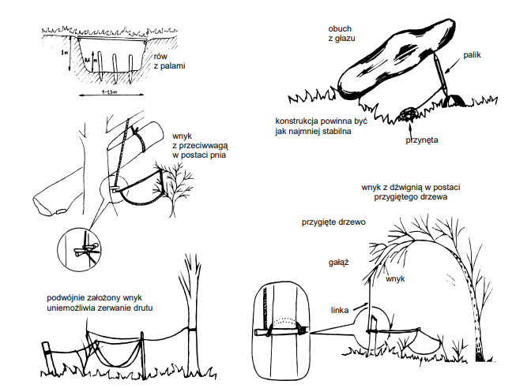
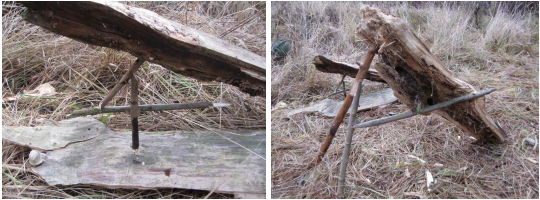
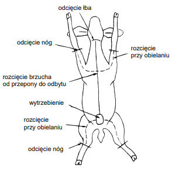

ŻYWNOŚĆ
Ogólne zasady żywienia podczas bytowania
Stosowanie zasad doboru pożywienia w trudnych warunkach bytowania, o ile w ogóle jest to możliwe, pozwala na utrzymywanie stale wysokiej kondycji psychicznej i fizycznej. Dlatego zawsze, kiedy tylko możemy, powinniśmy odpowiednio dobierać – zarówno pod względem kalorycznym, jak i smakowym – swe pożywienie.
Człowiekowi ciężko pracującemu potrzeba dziennie 5000-5500 kalorii, w co wchodzić powinno, między innymi, 150 g białka, 130 g tłuszczów i ok. 850-900 g węglowodanów. Wydatek energii, a więc i zapotrzebowanie na kalorie, są różne przy różnych czynnościach:
| Czynność | Kalorie na godzinę |
|---|---|
| Sen | 60 |
| Stanie | 110 |
| Pływanie | 500 |
| Marsz | 300 |
| Bieg | 620 |
| Wspinaczka | 720 |
| Walka wręcz | 950 |
Aby wiadomo było, ile jakich produktów należy konsumować, opisane są przy poszczególnych produktach ich wartości odżywcze:
| Produkt | 100g Produktu ile kalorii |
|---|---|
| oliwa, olej roślinny | 930 |
| tłuszcz zwierzęcy | 900-950 |
| tłuszcz roślinny | 750-780 |
| boczek | 650 |
| orzechy | 580 |
| kiełbasa | 540 |
| czekolada | 450-500 |
| ser biały | 400 |
| cukier | 400 |
| mięso z drobiu | 300-36 |
| makaron | 335 |
| mąka | 320 |
| miód | 320 |
| dżem | 400 |
| mięso ryb | 150-250 |
| jarzyny | 100-200 |
Dodatkową wskazówką do prawidłowego odżywiania się jest norma dzienna zapotrzebowania na poszczególne produkty:
| mleko i produkty mleczne | 0,5-1 l |
| zielone jarzyny | 200 g |
| jarzyny i owoce | 300 g |
| mięso, ryby | 200-300 g |
| potrawy mączne | 400-500 g |
| środki słodzące | 100 g |
| tłuszcze | 50 g |
Jeżeli w terenie znajduje się samotny człowiek, układanie przez niego i przestrzeganie odpowiedniego jadłospisu jest niemożliwe. Powinien wówczas kierować się jedynie podstawowymi, ogólnymi zasadami żywienia:
- jeść pokarm możliwie zróżnicowany;
- unikać jedzenia zbyt dużej ilości tłuszczu;
- nie spożywać żadnych posiłków na godzinę przed i do godziny po dużym wysiłku fizycznym;
- dobrze jest spożywać małe ilości cukrów podczas marszu, gdyż znacznie oddala to moment zmęczenia organizmu;
- w czasie marszu najlepiej pić ciepłe napoje, unikać picia zimnej wody podczas pracy;
- w czasie upałów ograniczać spożywanie produktów tzw. fermentujących: kapusty, grochu, fasoli, bobu, a także konserw oraz piwa;
- przy poruszaniu się w górach spożywać więcej pokarmu oraz pić większe ilości wody, nawet gdy nie jest się spragnionym (w górach bowiem łatwo jest odwodnić organizm, czego znakiem będzie pieczenie w nosie oraz wyschnięte, spękane wargi).
Żywność pochodzenia roślinnego
W naszych warunkach klimatycznych rośliny nadające się do spożycia rosną dosłownie wszędzie. Przede wszystkim, przez większą część roku, są to wszelkie rośliny uprawne, które można jeść na surowo, przyrządzić gotując, piekąc lub smażąc. Z roślin takich również można robić zapasy. Nadają się do tego rośliny niepsujące się szybko, czyli ziemniaki, kapusta, cebula, marchew, pietruszka, buraki, pory, selery czy rzepa. Rośliny te należy przechowywać w zagłębieniach, w miejscach zacienionych. Mogą być przykryte warstwą ziemi, lecz raz na dwa lub trzy dni należy podlewać je wodą. Owoce można jeść niedojrzałe, ale dopiero po upieczeniu lub ugotowaniu.
Pamiętać trzeba, że wszelkie zdobywanie roślin uprawnych, lub nawet zapasów miejscowej ludności, pociąga za sobą ryzyko zdemaskowania grupy. Dlatego lepiej byłoby korzystać ze źródeł zaopatrzenia, które nie zdradzą obecności bytujących, a więc głównie z zasobów roślin dzikich.
Mimo że zdecydowana większość roślin dziko rosnących jest jadalna, to jednak bywają wśród nich i trujące, dlatego należy stosować pewne zasady podczas przyrządzania z nich posiłków:
- jadalna jest tylko pewna część rośliny;
- nie należy spożywać dużej ilości potraw z roślin nieznanych;
- rośliny, którymi żywią się gryzonie, są jadalne;
- każdą nieznaną roślinę należy długo gotować;
- grzyby wolno zbierać jedynie znane;
- rośliny mające mleczko (oprócz mlecza) są trujące.
Przyrządzenie do spożycia roślin dziko rosnących zależy od rodzaju rośliny oraz możliwości i umiejętności kucharza. Znając pewne właściwości niektórych roślin, można przyrządzić smaczne potrawy.
W wypadku braku cukru można sporządzić bardzo słodki syrop ze wspomnianego wcześniej napoju z brzozy czy klonu. Zebrany napój gotuje się, aż powstanie lepki, gęsty, żółtobrązowy płyn.
Z brzozy również można uzyskać makaron. W tym celu należy wewnętrzną warstwę kory pociąć jak makaron i zagotować. Danie to ma dość dużą wartość odżywczą oraz zawiera witaminę C. Można dodawać je do innych dań, jeść jako makaron w zupie, a nawet na surowo.
Podobnie można postępować z wewnętrzną korą świerków, jodeł, wierzb i osik. Na wypadek potrzeby zdobycia mąki kora ta, odpowiednio utarta, może zastąpić w części mąkę pszenną lub żytnią, jednakże nie może być jej więcej jak 1/3 całości mąki.
Jadalna jest większość skalnych porostów. Smakują całkiem dobrze i mają dużo witamin.
Jadalne są również wszystkie gatunki traw morskich. Można jeść je na surowo, ugotować z nich zupę, udusić z mięsem. Trawa morska jest bardzo zdrowa, gdyż zawiera jod, składniki mineralne oraz dużą ilość witamin.
Najlepszą i najbardziej lekkostrawną rośliną jest pokrzywa. Wystarczy ją sparzyć wrzątkiem, aby przestała parzyć. Z jej liści można zrobić sałatkę o smaku podobnym do szpinaku. Bardzo smaczna i zdrowa jest także herbata z wysuszonych liści pokrzywy.
Napój w rodzaju kawy można przyrządzić z korzeni popularnego mlecza. Należy je wysuszyć, uprażyć na patelni, zemleć i następnie zaparzyć napój.
Owoce dzikiej róży dojrzewają na jesień i można je znaleźć na krzewach nawet zimą. Z dojrzałych owoców zdejmuje się łupiny, zaś z miąższu można zaparzyć herbatę zawierającą dużo witaminy A.
Bardzo smaczne są grzyby, jednakże nie można sobie pozwolić na konsumpcję potraw z grzybów nieznanych. Nawet małe ilości takiej potrawy w niektórych przypadkach mogą być śmiertelne.
Jadalne są wszelkie orzechy, od małych jodłowych czy świerkowych, przez bukowe i laskowe do włoskich. Dodatkowo są one wysokokaloryczne. śołędzie natomiast nadają się najlepiej do wyrobu mąki, po wysuszeniu i następnie zmieleniu.
Jadalne są także bulwy lilii wodnych, zarówno na surowo, jaki i gotowane. Można także jeść młode, uprażone pędy paproci
Bardzo popularny jest szczaw, z którego można przyrządzić zupę. Dodatkowo jadalne sałatki, sosy i zupy przyrządza się z rdestu, rzodkwi, barszczu zwyczajnego, rzeżuchy łąkowej, koniczyny, pałki wodnej, tataraku, trzciny, strzałki wodnej, owoców tarniny, głogu, jarzębiny, kaliny, czeremchy. Nie wolno także zapominać o malinach, poziomkach, jeżynach, jagodach, borówkach, porzeczkach, brusznicy czy dziko rosnących gruszach i jabłoniach.
śywność pochodzenia zwierzęcego
Ze wszystkich zwierząt występujących w naszej strefie klimatycznej prawie wszystkie są jadalne. Niejadalny jest jedynie kret i ogon szczura. Najlepiej oczywiście wykorzystywać zwierzęta hodowlane: drób, kozy, owce, krowy, konie, świnie, nawet psy i koty. Zdobywać je można przez uprowadzanie z pastwisk czy zagród. Ważne jest, aby zrobić to niezauważalnie. Wszelki drób najlepiej jest zwabić, np. okruchami chleba, w miejsce swego ukrycia i tam, gdy będą w zasięgu ręki - zadusić. Świnie można uprowadzić przy pomocy żyłki, haczyka i przynęty. Dozwolone są ogólnie wszystkie fortele w celu cichego pochwycenia zwierząt hodowlanych. Możliwości zależą od pomysłowości i wyposażenia myśliwego. Ze względu na wydawane odgłosy zwierzęta hodowlane najlepiej jest uprowadzać za dnia, a wszelkie pozostawione ślady należy maskować
Oprócz zwierząt hodowlanych jest wiele zwierząt jadalnych żyjących dziko. Polowanie na nie zajmuje jednak więcej czasu i wymaga pewnych umiejętności z dziedziny myślistwa.
Można polować dwoma sposobami: przez odstrzał oraz za pomocą wnyków i pułapek. Najlepiej jest stosować oba sposoby równolegle.
Polowanie przez odstrzał zwierzyny wymaga bezpośredniego zaangażowania myśliwego i polega na ustrzeleniu zwierzęcia przy pomocy posiadanej broni z tzw. podchodu lub zasadzki. Podchodzenie jest głównym problemem przy tego typu polowaniu. Należy robić to, w miarę możliwości, od strony zawietrznej (aby wiatr wiał od zwierzęcia do ciebie), unikając gwałtownych ruchów czy jakiegokolwiek głośnego zachowania się. Przy każdym podniesieniu łba przez zwierzę myśliwy musi zastygnąć w bezruchu. W przeciwnym razie zostanie wykryty. Trzeba liczyć się z tym, że podchodzenie takie może trwać nawet kilka godzin.
Polowanie z zasadzki polega na zasadzeniu się na zwierzę w ukryciu w pobliżu wodopoju czy ścieżki zwierząt i wyczekaniu na nadejście zwierzęcia. Najlepiej zasadzać się przed świtem, bowiem największy ruch u zwierząt występuje właśnie o świcie.
Przy polowaniu na zwierzę mięso- lub padlinożerne można posłużyć się przynętą w postaci sztuki mięsa.
Oczywistą rzeczą w obu przypadkach jest perfekcyjne zamaskowanie się, przy czym trzeba również uwzględnić maskowanie swego zapachu poprzez nasmarowanie się np. wywarem z silnie pachnących roślin
Dodatkowo dobrze byłoby używać do polowania tłumika przy broni oraz należałoby spiłować ostrołuk pocisku dla zwiększenia jego mocy obalającej. W przeciwnym razie trafione zwierzę może jeszcze spory kawałek uciec. Celować należy za przednią łopatkę (za przednią nogę) lub w głowę.
Nie zawsze jednak będzie można polować przy użyciu broni palnej. Dlatego posiąść trzeba umiejętność zakładania wnyków i pułapek. Polowanie w ten sposób polega na ustawianiu w odpowiednim miejscu takich właśnie urządzeń i częstym ich sprawdzaniu. Pułapki przede wszystkim należy ustawiać na zwierzęcych ścieżkach. Ścieżki te można rozpoznać po tropach. Należy przy tym wiedzieć, jakie ślady pozostawiają różne zwierzęta.
W zależności od gatunku zwierzyny buduje się różne pułapki. Do polowań na duże zwierzęta najlepiej nadaje się dół z wbitymi w dno palami (punji). Dół należy przykryć rusztowaniem z żerdzi i dokładnie zamaskować. Rusztowanie musi być na tyle słabe, aby pod ciężarem zwierzęcia załamało się. Zwierzę, które wpadnie do dołu, po wykryciu przez myśliwego należy dobić.
Nieco mniej pracochłonna jest pułapka z wykorzystaniem wnyka z mocnej linki. Na lince tej, przerzuconej przez konar, należy umocować uniesiony koniec ciężkiej kłody. U dołu zaś, z drugiej strony, sporządzić mocowanie z dwóch mocnych kołków . Następnie na wysokości głowy zwierzęcia należy z reszty tej linki, zawiązanej w pętlę, rozwiesić wnyk. Zwierzę po włożeniu głowy we wnyk i pociągnięciu go odblokuje kłodę, co spowoduje jej opadnięcie. Pułapka zadziała skutecznie, jeżeli odpowiednio blisko wylotu ustawi się kołek z linką na mocowaniu, aby stosunkowo niewielka siła mogła go wyrwać.
Przy polowaniu na zwierzęta mięsożerne można ustawić pułapkę z głazu i kołka. W tym celu nad lekkim zagłębieniem należy, na odpowiednio mocnym kołku, oprzeć ciężki blok skalny – w ten sposób, aby nawet mały ruch kołka spowodował osunięcie się głazu. Dla uniknięcia wbicia się kołka w ziemię pod ciężarem głazu należy oprzeć go od spodu na kamieniu. Przynęta przywiązana linką do dolnej części kołka da pewność, że zostanie on we właściwym momencie poruszony. Całość powinna być jak najmniej stabilna.
Do upolowania zwierzyny małej nie są potrzebne aż tak wymyślne pułapki. Wystarczą proste wnyki rozpostarte pomiędzy krzewami czy też odpowiednio wbitymi żerdziami na ścieżkach zwierząt. W celu zwiększenia prawdopodobieństwa tego, że zwierzę nie wydostanie się z pułapki można zastosować proste urządzenie sporządzone z kawałka sznurka i kija. Odpowiednie mocowanie spowoduje podniesienie w górę całego urządzenia, wraz z upolowanym zwierzęciem w momencie jego złapania. Na ścieżkach należy założyć możliwie jak najwięcej pułapek, gdyż zwiększa to prawdopodobieństwo upolowania zwierzęcia. Dość dużym problemem jest materiał na wnyki. W celu skanalizowania ruchu zwierząt przy zastawionej pułapce można stawiać różne zapory – w ten sposób, aby jedyne przejście było w rejonie pułapki.
Przy polowaniu na ptaki wodne można łapać je bezpośrednio z wody, budując sobie na wystającej z wody głowie odpowiednie maskowanie z trzcin i traw. Ptaki można wtedy chwytać, wciągając je rękami za nogi pod wodę i przytrzymać tak długo, aż się utopią lub skręcić im kark.
Przy podchodzeniu do zwierząt trzeba zwrócić uwagę, aby nie podchodzić po linii prostej, ponieważ zwiększa to ich czujność i podejrzliwość. Dodatkowo należy pozyskiwać ptasie jaja z dziupli i gniazd.
Oprócz zwierząt leśnych i ptaków ważnym składnikiem pożywienia podczas działań na zapleczu przeciwnika mogą być ryby, których mięso, choć jest mało kaloryczne, posiada dużą ilość białka. Należy łowić je przy pomocy wędki lub ościeni. Najwięcej ryb jest w zarośniętych jeziorach o gęsto porośniętym dnie. Lubią przebywać w pobliżu korzeni drzew porastających brzegi i w zagłębieniach przy stromych brzegach oraz na końcach katarakt i wodospadów. Można je spotkać również za małymi wysepkami, dużymi kamieniami i zanurzonymi w wodzie pniami drzew.
Wędzisko zastąpić może gałąź jałowca lub leszczyny, ale najczęściej nie jest ono w ogóle potrzebne. Spławik najlepiej wykonać z pióra wodnego ptaka lub z gałązki iglastego drzewa. W przypadku gdy nie posiada się żadnych środków do połowu ryb, można zrobić pułapkę z witek wiklinowych, zaplecionych na kształt kosza z lejkowatym otworem. Wewnątrz takiego urządzenia, zwanego więcierzem, umieszcza się przynętę - kawałek mięsa lub chleba. Więcierz należy sprawdzać dwa razy dziennie. Trzeba pamiętać, aby dobrze umocować go ze względu na możliwość porwania przez nurt. W górskich potokach można zrobić pułapkę z kamieni i gałęzi. Należy zbudować z kamieni zatokę z przerwą (wejściem) w jednym miejscu, aby mogła z niej swobodnie uchodzić woda. W przerwie tej trzeba zbudować silną kratownicę z gałęzi, która nie pozwoli przepłynąć tamtędy rybom. Podobną kratownicę w kształcie litery V z otworem na wierzchołku ustawia się z drugiej strony kamiennej pułapki. Ważne jest, aby murek z kamieni był dość wysoki i uniemożliwiał rybom przeskoczenie nad nim.
W przypadku gdy dysponujesz liśćmi orzecha włoskiego, możesz przy ich pomocy zatruć ryby w strumieniu. W tym celu w dole strumienia zbuduj zastawę z żerdzi tak, aby przepuszczała swobodnie wodę, lecz zatrzymała ryby. Natomiast 300-400 m w górę rzeki wsyp do wody zmielone liście orzecha włoskiego.
W czystych wodach można łowić ryby przy pomocy ościenia. Oścień można wykonać w prosty sposób z rozwidlonej gałęzi o długości ok. 2 m. Końce trójzębu trzeba zaostrzyć nożem i opalić. Przy polowaniu ościeniem należy pamiętać, aby przy celowaniu trzymać go lekko poniżej zdobyczy, ze względu na załamanie światła w wodzie.
W zimie, w celu wykonania przerębli, należy rozpalić ognisko na małej tratewce ustawionej na lodzie. Spowoduje to szybkie roztopienie się lodu i dodatkowo światło zwabi ryby w rejon przerębli.
Przed spożyciem mięsa zwierząt należy upewnić się, czy były zdrowe. Nie wolno jeść mięsa zwierząt, których oczy są zmatowiałe, zaszły mgłą (zwłaszcza ryby) lub które miały nienaturalnie miękki brzuch. U zwierząt leśnych zdrowe osobniki mają lśniące futro – bez ubytków – i czyste uszy. Oczywiście, chorobę wskazuje piana w pysku.
Podobnie ptaki – powinny mieć pełne upierzenie.
Przyrządzanie mięsa
Przygotowanie ryb do spożycia polega na odcięciu głowy ze skrzelami, rozcięciu brzucha i wypatroszeniu oraz zeskrobaniu łusek. Łuski skrobie się od ogona do głowy. W przypadku trudności w ich schodzeniu, podobnie jak z upierzeniem ptaków, należy sparzyć je w gorącej wodzie. Mięso ryb można jeść na surowo.
Przygotowanie ptaków do spożycia polega na odcięciu głowy i nóg, wyrwaniu pierza (po uprzednim sparzeniu wrzątkiem) i opaleniu nad ogniem oraz wypatroszeniu przez rozcięcie brzucha od kupra do przepony i wyrwaniu wnętrzności. Z wnętrzności jadalne są serce i wątroba, które można spożyć na surowo.
Przy drobnej zwierzynie płowej – w celu przygotowania jej do spożycia – należy:
- jeżeli jest to samiec – wytrzebić go (odciąć narządy rozrodcze);
- obielić (zdjąć skórę): odciąć przednie łapy i głowę, naciąć skórę od łap przez szyję, zedrzeć skórę w dół systemem workowym, odciąć kitę i tylne łapy ze skórą;
- wypatroszyć: rozciąć brzuch od odbytu do przepony, wyrwać wnętrzności, powiesić tuszkę, aby ociekła krew (należy ją pozostawić na jeden lub dwa dni, aby mięso skruszało).
Mięso przyrządzone od razu po wypatroszeniu jest mniej smaczne. Przygotowanie dużej zwierzyny płowej polega na:
- Jeżeli jest to samiec – wytrzebieniu go i wyciśnięciu moczu z pęcherza moczowego.
- Wypatroszeniu:
- rozcięciu skóry na podgardlu, przecięcie tchawicy i przełyku;
- rozcięciu brzucha od odbytu do przepony, przecięcie błony brzusznej, bez naruszenia jelit;
- przecięciu przepony wzdłuż żeber;
- wyszarpnięciu tchawicy do jamy brzusznej i następnie całych wnętrzności na zewnątrz;
- ustawieniu tuszki pionowo, aby ściekła krew.
- Obieleniu przez podcięcie skóry od brzucha i wzdłuż nóg do grzbietu; końce nóg oraz łeb należy odciąć.
- Ostudzeniu tuszki (pozostawieniu do skruszenia).
Serce i wątrobę można jeść na surowo. Poza tym bardzo zdrowa jest świeża krew zwierząt. Wnętrzności należy zakopać, tuszkę po wycieknięciu krwi dokładnie umyć wodą, następnie – jeśli nie będzie studzona – poporcjować na odpowiednie kawałki, dobre do pieczenia, smażenia czy gotowania. Do przyrządzania posiłku nad ogniem najlepiej używać drewna z wierzby, jałowca lub zdziczałych drzew owocowych.
